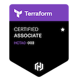

I am an Engineering Manager with over 15 years building backend platforms, designing cloud systems, and leading technical teams.
I build AI systems that run in production.
I work on:
MCP servers, tool calling, and identity-aware access for agents using internal systems.
RAG, evals, guardrails, cost control, and observability for LLM systems in production.
Permissions, auditing, policy, and handling of sensitive data in regulated environments.
AWS, Kubernetes, and multi-cloud architecture for systems that need to scale.
I lead teams, set roadmaps, and ship AI initiatives into production.
Impact from platforms I have built and led.
MTTR −50%
Observability, logging, and incident response for backend platforms in production.
From monthly to continuous
CI/CD, containers, and orchestration to go from one release a month to several per week.
Scale of millions
An AWS microservices platform that powers mobile products used by millions of people.
MCP + governance
MCP servers, identity-aware access, and AI policy in a regulated enterprise environment.

Terraform AssociateIf you are building an AI Platform team, email me.